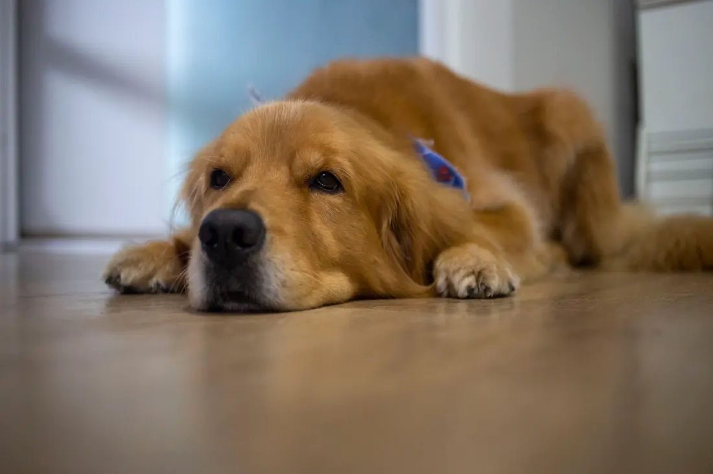
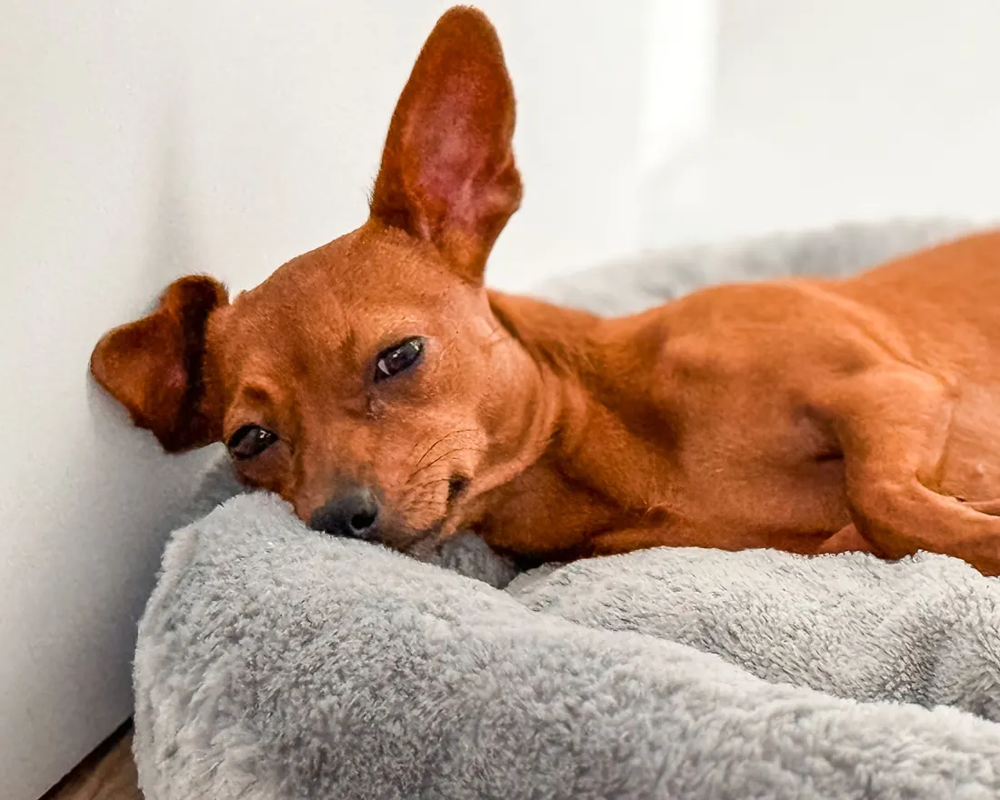
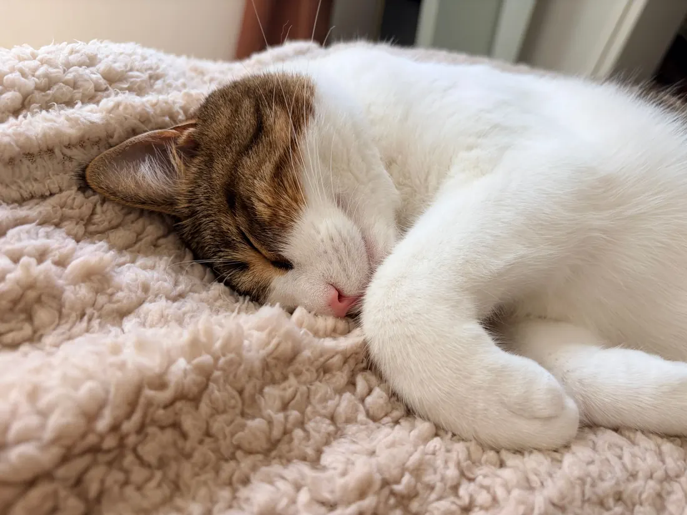

Mannheim · Ludwigshafen · Heidelberg
Wir kommen zu Ihnen.
Notfall- und Akutversorgung für Hunde und Katzen, bei Ihnen zu Hause. Kein Transportkorb, keine Fahrt, kein Wartezimmer.
Rasheed Al SaeedIhr Tierarzt, kommt selbst zu Ihnen
9–23 Montag bis Freitag 9 bis 23 Uhr erreichbar, Samstag 8 bis 12 Uhr.
Termin anfragen
Zwei kurze Fragen, dann geht es zur Anfrage. Mein Team meldet sich so schnell wie möglich bei Ihnen.
Wobei ich helfe
Alle Leistungen-

Akutversorgung und Stabilisierung
Bei Atemnot, Vergiftung oder Kreislaufproblemen untersuche ich Ihr Tier sofort, stabilisiere es und lindere den Schmerz.
Mehr dazu -

Durchfall und Erbrechen
Ich untersuche Ihr Tier, suche die Ursache und gebe ihm Flüssigkeit, wenn es sie braucht.
Mehr dazu -
Schmerzbehandlung
Ich behandle akute und chronische Schmerzen mit Medikamenten aus meiner tierärztlichen Apotheke.
Mehr dazu
Weitere Leistungen
- Bisswunden und VerletzungenBlutet, Leckt die Wunde, Schwellung
- OhrenentzündungenKopfschütteln, Kratzen am Ohr, Geruch
- Augen und BindehautRote Augen, Tränen, Zukneifen
- Blase und HarnwegeHäufiger Harndrang, Blut im Urin, Pressen
- Infektionen und InfusionenFieber, Mattigkeit, Trinkt wenig
- Lahmheit und BewegungHumpeln, Steifer Gang, Springt nicht mehr
- Abschied zu Hause
So läuft ein Hausbesuch
Am Telefon
Sie schildern, was los ist. Mein Team oder ich fragen nach und machen mit Ihnen eine Uhrzeit aus. Sie erreichen uns auch per WhatsApp oder über die Terminanfrage.
Vor dem Besuch
Halten Sie Ihr Tier in einem ruhigen, gut beleuchteten Raum bereit. Katzen am besten schon vorher, bevor sie sich verstecken.
Bei Ihnen
Ich untersuche Ihr Tier in seiner vertrauten Umgebung, ohne Transportkäfig und ohne Fahrt. Sie bleiben die ganze Zeit dabei, und ich erkläre Ihnen jeden Schritt.
Nach dem Besuch
Die Rechnung kommt direkt per E-Mail. Sie können sie bei Ihrer Tierkrankenversicherung einreichen.
Wenn mehr nötig ist
Braucht Ihr Tier eine Operation oder stationäre Behandlung, vermittle ich Sie an eine geeignete Klinik in Mannheim und übernehme die Vor- und Nachsorge.
Ich bringe die Praxis zu Ihnen nach Hause
Rasheed Al Saeed, approbierter Tierarzt, Schwerpunkt Kleintiermedizin
Transport und fremde Gerüche bedeuten für ein krankes Tier Stress. Das verschlechtert nicht nur sein Befinden, er erschwert auch die Untersuchung. Zu Hause untersuche ich ruhiger und sehe mehr.
Meine tierärztliche Kenntnisprüfung habe ich an der Justus-Liebig-Universität Gießen abgelegt. Erfahrung habe ich in einem Internship bei AniCura in Bielefeld und in Tierarztpraxen und Kliniken in Essen gesammelt. Dort habe ich gelernt, wie viel eine sorgfältige Anamnese und eine ruhige, klare Entscheidung wert sind, wenn es eilt.
Ich behandle allein. Mein Praxisteam kümmert sich um Termine, Erreichbarkeit und Medikamente, damit ich mich ganz auf Ihr Tier konzentrieren kann.
Ihr Tier ist für Sie ein Familienmitglied. Ich behandle es mit Ruhe, Sorgfalt und fachlicher Gewissenhaftigkeit, zum Wohl von Tier und Mensch.
Was mir wichtig ist
- Eine einfühlsame, stressarme Behandlung
- Verständliche Erklärungen, damit Sie wissen, was passiert
- Zeit und Geduld für jedes Tier
- Eine Betreuung, die zu Ihrem Tier und Ihrer Familie passt
- Schonende Behandlung nach dem aktuellen Stand der Tiermedizin
- Enge Zusammenarbeit mit Ihnen und, wenn nötig, mit Praxen und Kliniken
Mit diesem Auto komme ich. Darin ist meine tierärztliche Apotheke mit den wichtigsten Medikamenten.
Wohin ich komme
Mein Schwerpunkt ist das Stadtgebiet Mannheim. Ich fahre auch nach Ludwigshafen, Heidelberg, Karlsruhe, Speyer, Schwetzingen, Weinheim, Worms und in die Orte dazwischen.
Mannheim
Innenstadt, Jungbusch, Neckarstadt, Lindenhof, Neckarau, Almenhof, Rheinau, Schwetzingerstadt, Oststadt, Neuostheim, Seckenheim, Friedrichsfeld, Feudenheim, Käfertal, Vogelstang, Wallstadt, Waldhof, Gartenstadt, Schönau, Sandhofen
Rund um Mannheim
- Ludwigshafen
- Heidelberg
- Schwetzingen
- Viernheim
- Weinheim
- Speyer
- Karlsruhe
- Worms
- Neustadt
- Bad Dürkheim
- Hockenheim
- Haßloch
- Altrip
- Neuhofen
- Limburgerhof
- Mutterstadt
- Dannstadt
- Fußgönheim
- Ketsch
- Otterstadt
- Waldsee
- Böhl-Iggelheim
- Hochdorf-Assenheim
- Rödersheim-Gronau
- Römerberg
- Dudenhofen
- Neulußheim
- Germersheim
- Lingenfeld
- Alzey
Was auf Sie zukommt
Ich rechne nach der Gebührenordnung für Tierärzte ab. Vorab erstelle ich Ihnen einen Kostenvoranschlag.
- Hausbesuch, Untersuchung und Behandlung
- nach GOT
- Anfahrt außerhalb Mannheims
- [FEHLT: Angabe]
- Nach 18 Uhr, am Wochenende und an Feiertagen
- Zuschlag nach GOT
- Bezahlen
- bar, EC-Karte oder Rechnung
- Absagen
- bis 24 Stunden vorher ohne Gebühr
Ratgeber
Alle ArtikelHäufige Fragen
Termin
Wie vereinbare ich einen Termin?
Rufen Sie an, schreiben Sie per WhatsApp oder nutzen Sie die Terminanfrage auf dieser Seite. Ich melde mich so schnell wie möglich und wir finden einen Termin.
Wie kurzfristig bekomme ich einen Termin?
Rufen Sie an, dann sagt Ihnen mein Team, wann ich bei Ihnen sein kann. Bei akuten Beschwerden komme ich innerhalb meiner Zeiten so schnell wie möglich. [FEHLT: übliche Wartezeit von Herrn Al Saeed]
Kommen Sie auch am Wochenende?
Ja, nach Vereinbarung am Samstag und in Ausnahmefällen am Sonntag. Am Wochenende fällt ein Zuschlag an.
Kann ich einen Termin absagen?
Ja. Sagen Sie bitte bis 24 Stunden vorher ab. Bei einer späteren Absage berechne ich bis zur Hälfte der Hausbesuchsgebühr.
Behandlung
Bieten Sie Notfallbehandlungen an?
Ja, innerhalb meiner Zeiten versorge ich akute Erkrankungen und Verletzungen bei Ihnen zu Hause. Eine 24-Stunden-Versorgung biete ich nicht an. In Lebensgefahr fahren Sie bitte direkt in die nächste Tierklinik.
Können Sie operieren?
Größere Operationen sind mobil nicht möglich, dafür braucht Ihr Tier eine Klinik. Ich vermittle Sie an eine geeignete Klinik in Mannheim und übernehme die Vor- und Nachsorge.
Welche Tiere behandeln Sie?
Vor allem Hunde und Katzen. Bei Kaninchen, Meerschweinchen und anderen Kleintieren rufen Sie mich bitte vorher an, dann besprechen wir, was möglich ist.
Abrechnung
Wie bezahle ich, und zahlt meine Versicherung?
Sie zahlen bar, mit EC-Karte oder auf Rechnung. Die Rechnung bekommen Sie direkt nach der Behandlung per E-Mail. Viele Tierkrankenversicherungen erstatten die Behandlung, wie viel, hängt von Ihrem Tarif ab.
Berechnen Sie die Anfahrt?
[FEHLT: Anfahrt im Stadtgebiet Mannheim inklusive? Pauschale außerhalb? Angabe von Herrn Al Saeed]
Einsatzgebiet
Wie finde ich heraus, ob Sie zu mir kommen?
Geben Sie oben unter „Wohin ich komme“ Ihre Postleitzahl ein. Steht Ihr Ort nicht auf der Liste, rufen Sie an, dann klären wir es.
Ihre Frage war nicht dabei?
Rufen Sie an oder schreiben Sie per WhatsApp: [FEHLT: Nummer]. Mein Team beantwortet Ihre Frage direkt.
Im Notfall
Bei Atemnot, Vergiftung, Verletzungen, starken Schmerzen oder Kreislaufproblemen rufen Sie mich an. Ich komme so schnell wie möglich, untersuche Ihr Tier und stabilisiere es. Die wichtigsten Medikamente habe ich dabei.
0621 000 00 00Eine 24-Stunden-Versorgung biete ich nicht an. Ist das Leben Ihres Tieres in Gefahr oder erreichen Sie mich außerhalb meiner Zeiten, fahren Sie bitte direkt in die nächste Tierklinik.